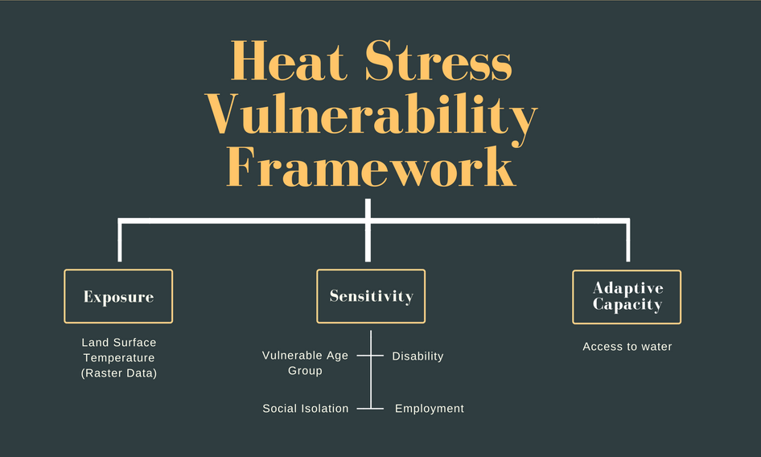
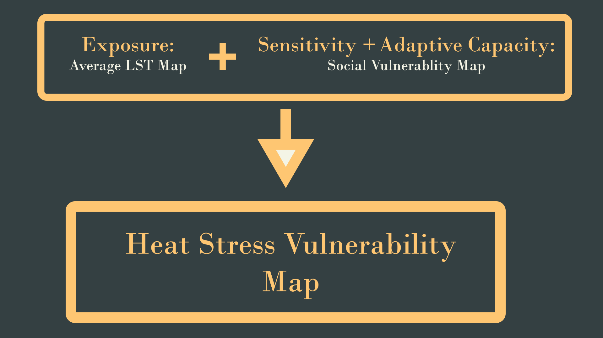
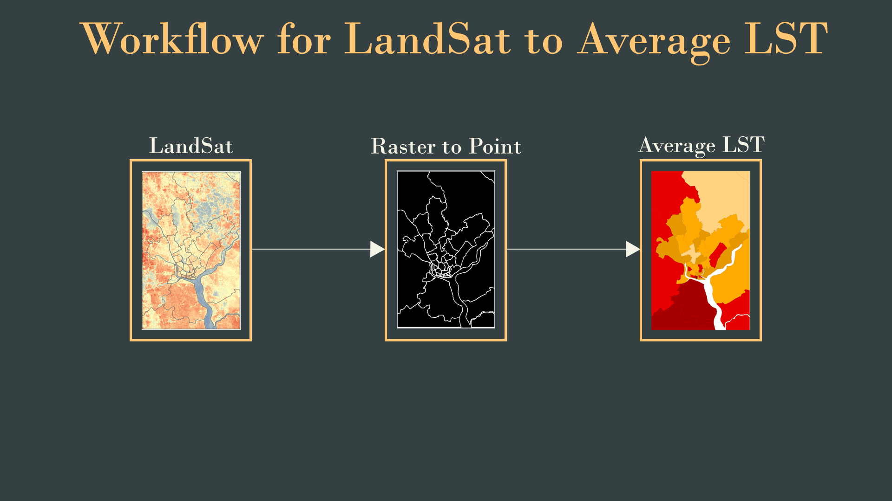
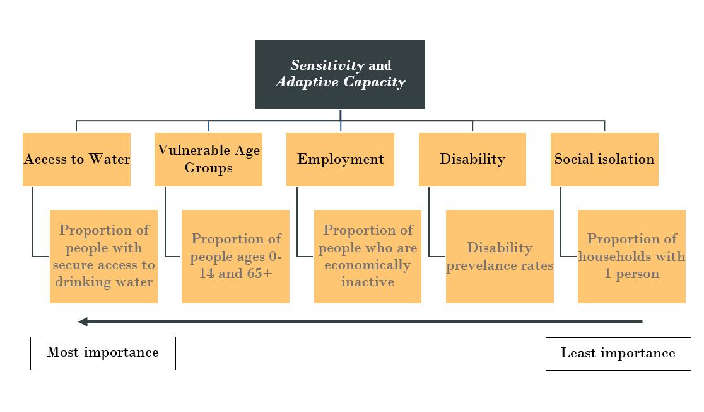
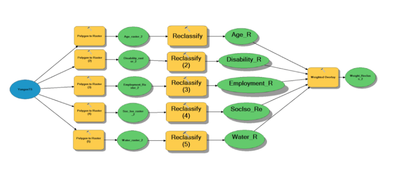

Analysis and Methods
Heat-stress Vulnerability Index
In our methodology, we aim to identify areas with high heat-stress vulnerability through the use of three indicators (Figure 1.1), namely Exposure, Sensitivity and Adaptive Capacity (Inostroza et. al., 2016). Exposure to heat-stress in our project would be measured using Land Surface Temperature (LST), Sensitivity would be assessed using demographic data, which are age, disability rate and social isolation, while Adaptive Capacity would be measured using the access to water supply and employment as socioeconomic variables. We will then combine variables under the three indicators to generate a final heat-stress vulnerability map (Figure 1.2)
Figure 1.1: Indicators of Heat Stress Vulnerability (adapted from Inostroza et. al., 2016)
Figure 1.2: Summary of Methods - Combining Exposure, Sensitivity, and Adaptive Capacity
Data Sources
In generating our heat exposure map, we used data from the raster LANDSAT images of LST in Yangon for March and December 2015 (Figure 1.3). These raster LANDSAT images were obtained with the help of a Master’s degree candidate who is also currently working on research involving LST in Yangon.

Figure 1.3: LANDSAT images of LST, Yangon
Next, in order to create a social vulnerability map, we made use of the baseline data published under the 2014 Myanmar Population and Housing Census. We extracted datasets which we feel were most telling of the heat-stress vulnerability amongst populations. Since these datasets were categorised by township units, we also obtained a shapefile of the township boundaries in Myanmar (MIMU, 2018).
Figure 1.4: Workflow for LandSat to Average LST
Generating an average LST Map from Landsat
First, we generate the boundary map of our study area, which is a shapefile of Yangon with township information embedded as attributes. This is done by combining the Landsat LST data of Yangon area obtained (by Professor Wang) with the study area boundary map. As the Landsat LST data is in raster format, we converted them to points using the conversion tool - raster to point. Thereafter, we join (join data from another layer based on spatial location) the point data layer with our study area map to obtain the average LST for each township enumeration unit. The overall process can be summarised in Figure 1.4. As a result, we created two maps, average LST by townships for both March (summer) and December (winter). We examined both March (hotter month) and December (cooler month) in order to understand if seasonal variations are important factors in alleviating heat-stress or whether they would result in changes in temperature patterns for the region. This is also important for the government to make informed decisions throughout the year based on heat exposure. Although temperature is a continuous phenomenon, the demographic data that we collected are classified and organised under individual townships. Hence by taking the average LST data of each township, we are able to compare the LST data with social vulnerability and combine them under a uniform scale to generate the heat-stress vulnerability map. Furthermore, when average temperature data is presented by township, it can better assist government authorities or local administration with the evaluation risks heat-stress on a municipal level. Although examining heat-stress vulnerability on a smaller scale of analysis (such as that of a 1 km by 1 km grid) can improve the representation of LST as a variable on the map , the data on socioeconomic variables that we managed to source are organised into that of townships and are not a continuous phenomenon unlike LST data. Since we intend to overlay the two datasets, ensuring both sets of data are represented on the same scale makes it easier for heat-stress vulnerable areas to be identified. Also, by doing this on a municipal level, we do not identify too many random points across the different townships in Yangon, making it difficult for the government to allocate their resources across the many areas.
"We examined both March (hotter month) and December (cooler month) in order to understand if seasonal variations are important factors in alleviating heat-stress or whether they would result in changes in temperature patterns for the region. This is also important for the government to make informed decisions throughout the year based on heat exposure."
Generating Social Vulnerability Map
We also seek to create a social vulnerability map in Yangon using socio-economic variables, namely that of the proportion of people in vulnerable age groups, disability prevalence rate, proportion of social isolation, proportion of people with lack of access to clean water supply and proportion of people who are economically inactive. The variables selected are largely based on literature review of common variables in various region heat vulnerability indexes and the accessibility to Myanmar demographic data (Table 1.1).
Table 1.1: Summary of Social Variables Selected for Social Vulnerability Map

Besides looking at literature, we also made a value judgement on the weightages based on the data range and average of each variable. For example, although disability rates contribute to social vulnerability, the range was only 1.3%-9.3% and the average was only 3.62% (Table 1.2). Thus we attributed a lower weightage to disability compared to vulnerable age groups.
Table 1.2: Data Range and Mean of Our Social Variables

However, an exception occurs when comparing between proportion of household with 1 person and proportion of population with disability. While data range and mean are lower, disability is slightly more vulnerable than social isolation based on our value judgement as it limits mobility. Hence, based on literature and our own value judgement, we have ranked the importance of each variable as such:
Subsequently, the social variable data are rasterized and the generated values are then classified into five categories for the conduct of our Weighted Overlay Analysis (Figure 1.5), in which the weighted overlay tool in ArcMap is used to generate our Social Vulnerability Map.
Figure 1.5: Social Variables in Formulating Sensitivity and Adaptive Capacity Criteria
In order to do this, we determined the weightages of the individual variables using the Analytical Hierarchy Process (AHP) method (Romeijn et al., 2016). The AHP method is a common technique employed in Multi Criteria Analysis (MCA), which is often utilised for making decisions from complex input data. The framework of the AHP method in our project is that of a hierarchical decision tree (Figure 1.6). The advantages of using the AHP method are that it can combine both objective and subjective inputs, as well as make use of either absolute or relative criteria (Romeijn et al., 2016). In our case, determining the weightages of the socioeconomic variables requires value judgement of the relative importance of each variable. This is due to the fact that the data values of each socioeconomic variable convey different meanings and cannot be compared across the board by simply looking at absolute numbers. Moreover, there are subjective inputs about the relative importance of each variable, based on existing research on the importance of various socioeconomic variables in social vulnerability. Hence, the AHP method of assigning relative weightages to each variable was found to be the most suitable for our analysis.
Figure 1.6: Model builder to create a weighted map of social vulnerability via Weighted Overlay Analysis
The framework of the AHP method in our project is that of a hierarchical decision tree (Figure 1.6). The advantages of using the AHP method are that it can combine both objective and subjective inputs, as well as make use of either absolute or relative criteria (Romeijn et al., 2016).
In order to assign these weightages, a pairwise comparison between variables is conducted by comparing each variable against one another individually. Each comparison will produce an intensity rating for the variables (Table 1.3), and this intensity rating will indicate the relative importance between the two variables in the pairwise comparison.
Table 1.3: The Various Intensity Ratings and their Corresponding Definitions

The weightages are determined through a matrix by normalising the intensity ratings that were generated in the pairwise comparisons (Table 1.4). Firstly, each intensity rating value in the matrix column is divided by the sum of the column to generate a normalised intensity rating for each variable in the row. The sum of normalised intensity ratings for variables in each row is then calculated. The final weightage is then calculated through taking the sum of normalised intensity ratings for each variable and then dividing by the total sum of normalised intensity ratings for all variables. These weightages, which are presented as percentages, are then rounded off to the nearest whole number for our weighted overlay analysis. Then, a weighted map depicting social vulnerability is created (Figure 1.7).
Table 1.4: Matrix Showing How the Weightage of Each Social Variable is Determined Through Normalising Intensity Rating


Figure 1.7: Social Vulnerability Map
After obtaining these two maps, we then overlay them to create a heat-stress vulnerability map, where we identify townships which has a higher level of social vulnerability, while also having high average LST. The combination of these two helps us identify townships in Yangon which experience high heat-stress vulnerability.